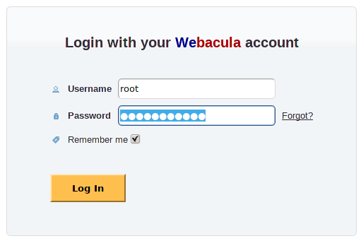
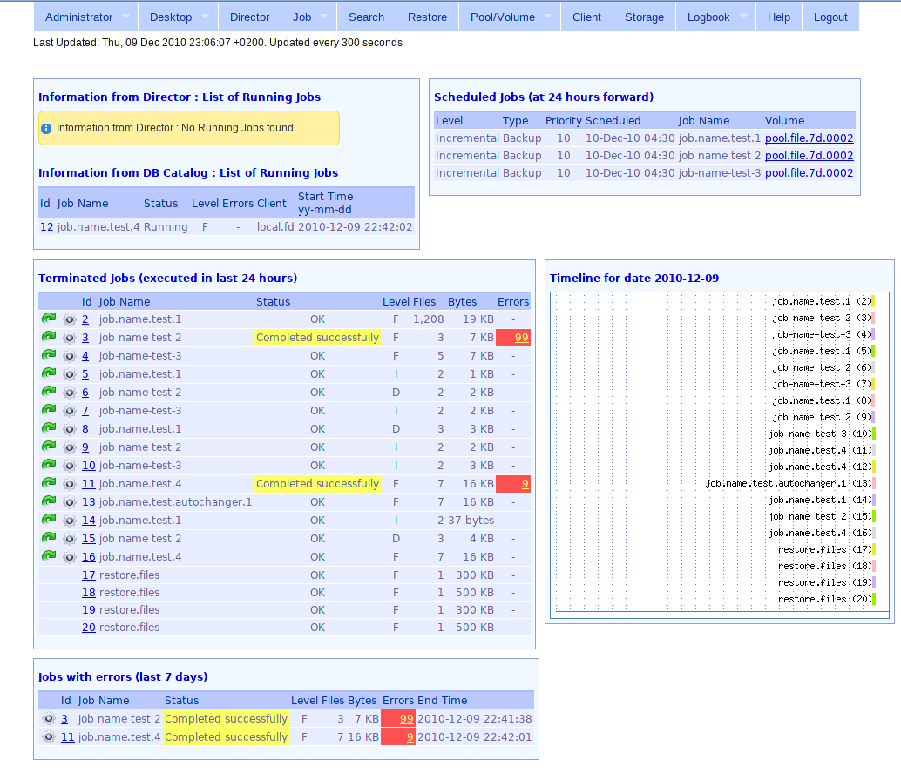
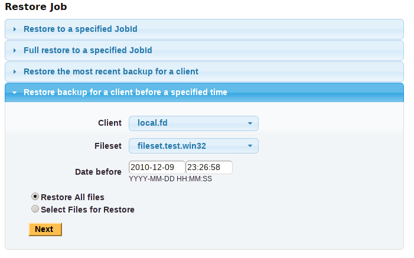
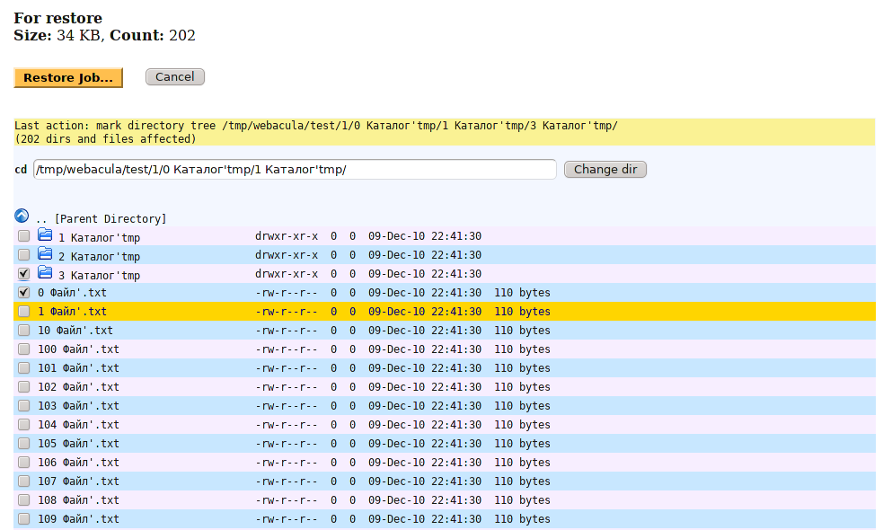
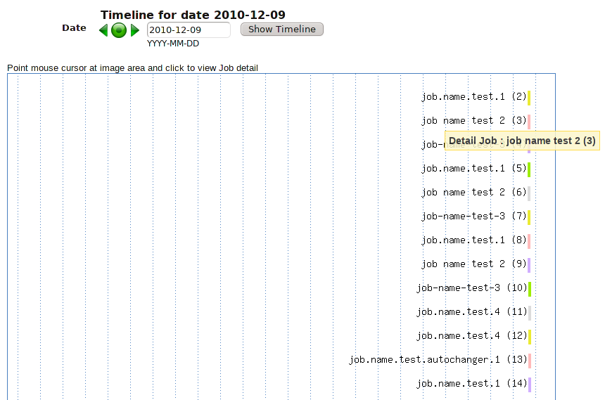
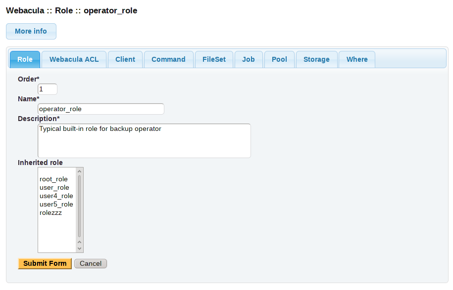
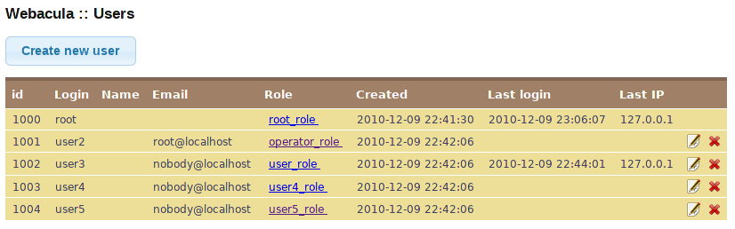

What is Webacula?
Webacula - Web + Bacula - web interface of a Bacula backup system.
News
- Version 5.5 Release Candidate also available!
- See video film for details
- Bacula and Webacula ACLs (Access Control Lists) implemented.
Features
The basic features of the program :
- Bacula and Webacula ACLs (Access Control Lists) implemented. ACLs stored in Bacula database in Webacula tables
- Full supported MySQL, PostgreSQL and Sqlite databases
- Run Job
- Restore all files or selected files from Job by JobId
- Restore the most recent backup for a client
- Restore backup for a client before a specified time
- Show Timeline for Jobs
- Mount, umount Storages
- Show Jobs which executed with errors
- Show a condition of your Volumes
- Show scheduled Jobs (at 24 hours forward)
- Show all running Jobs
- Show terminated Jobs (executed in last 24 hours)
- Search Jobs on several conditions
- Web (ajax) terminal to Bacula Console
- The detailed information on Pools, Volumes, Storages and Clients
- Logbook. Logbook - is simple electronic journal of backups. Records in logbook are insert, modify, delete manually by the operator. Records can contain links (usual web-links on which it is possible to click) to Bacula Jobs or links to other records of this logbook. In logbook insert records, for example, about Jobs, failures of the equipment, supernumerary situations, etc.
- RSS feed
- Multilingual support - standard gettext (*.mo) files. Currently supported languages: English, French, German, Italian, Portuguese Brazil, Russian, Spanish.
- For web designers : now very easy to create new skins
- Major version number of Webacula will match the version number of Bacula
System Requirements
- Bacula 3.0 or later
- Supported MySQL, PostgreSQL and Sqlite databases
- Zend Framework version 1.8.3 or later
- Zend Framework is built with object-oriented PHP 5 and requires PHP 5.2.4 or later with PDO extension active. Please see the system requirements appendix for more detailed information
- Apache and mod_rewrite
- Installed php-gd package
- Create separate database "webacula" (script in install/ directory) for use Logbook and Restore Job features
- Enable JavaScript
- http://php.net/dom for RSS feed. Installed php-xml package
- Browser Compatibility.
Screenshots
| Login form |  |
| Webacula main page |  |
| Restore Job, part 1 |  |
| Restore Job, part 2 |  |
| Timeline |  |
| Logbook |

|
| Admin panel, role |  |
| Admin panel, users |  |
{kind=link}
{kind=link}
{kind=link}
{kind=link}
{kind=link}
{kind=link}
{kind=link}
Video
"Webacula forever ;)" film part 1. HD quality available.
"Webacula forever ;)" film part 2. HD quality available.
Webacula Logbook How To :
Articles
Webacula on the web:
- Журнал "Системный Администратор". Настройка Webacula. Веб-интерфейс к Bacula
- Documentation to install Webacula on Ubuntu/Debian based
- The Birth of Webacula
- Установка Web-интерфейса для системы резервного копирования Bacula
Downloads
Downloads:
Top of pageSource code
Git repositories:
Git clone URLs :
git://webacula.git.sourceforge.net/gitroot/webacula/webacula git://github.com/tim4dev/webacula.gitTop of page
Mailing Lists
Project Mailing Lists:
- webacula-announce - Announces (Archive)
- webacula-users - For end-user (Archive)
License
Copyright 2007, 2008, 2009, 2010, 2011 Yuri Timofeev tim4dev@gmail.com

Webacula is free software: you can redistribute it and/or modify it under the terms of the GNU General Public License as published by the Free Software Foundation, either version 3 of the License, or (at your option) any later version.
Webacula is distributed in the hope that it will be useful, but WITHOUT ANY WARRANTY; without even the implied warranty of MERCHANT ABILITY or FITNESS FOR A PARTICULAR PURPOSE. See the GNU General Public License for more details.
You should have received a copy of the GNU General Public License along with this program. If not, see http://www.gnu.org/licenses/.

Top of page